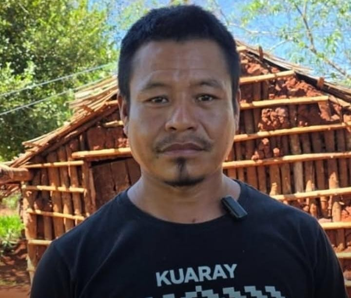
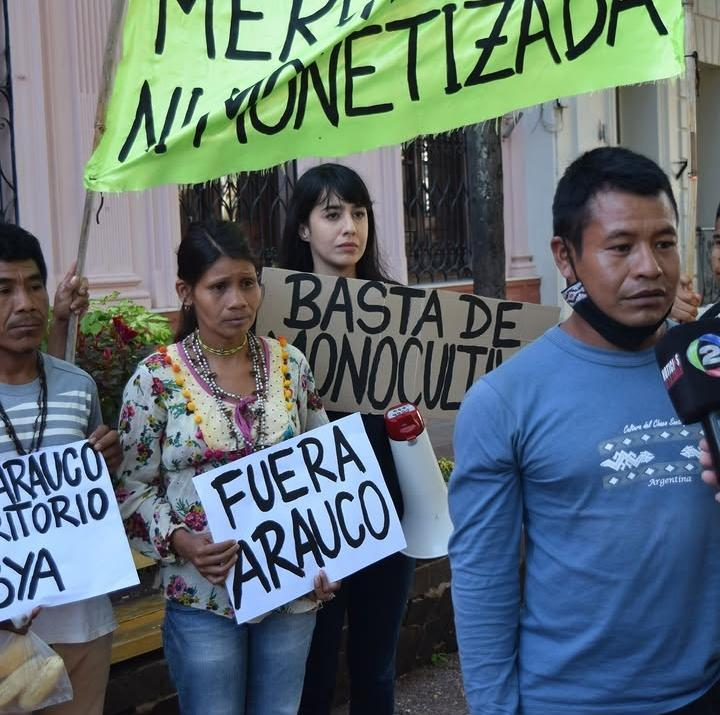
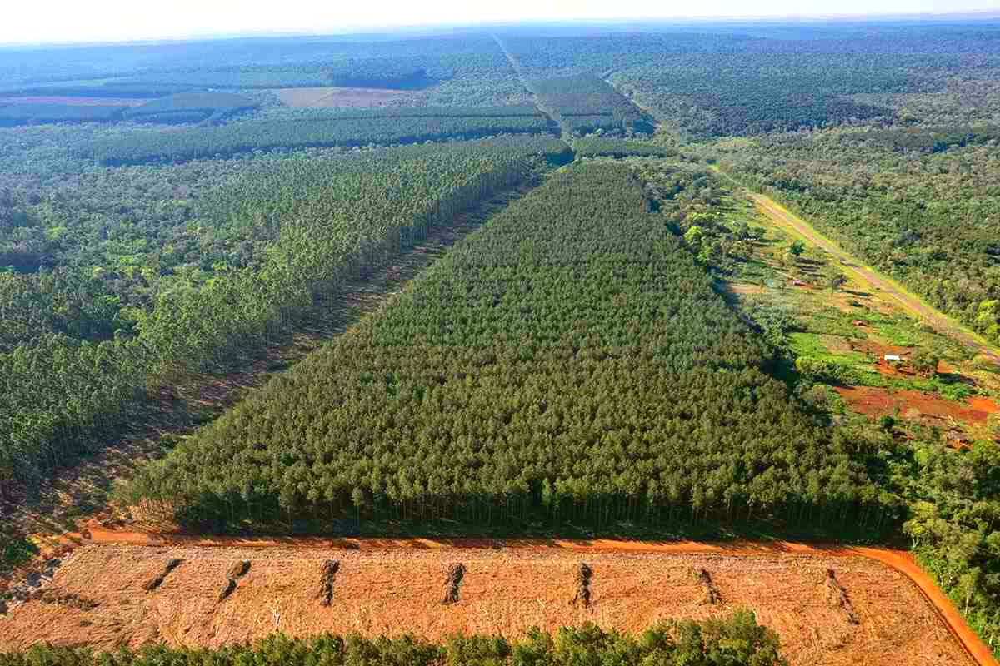
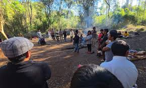
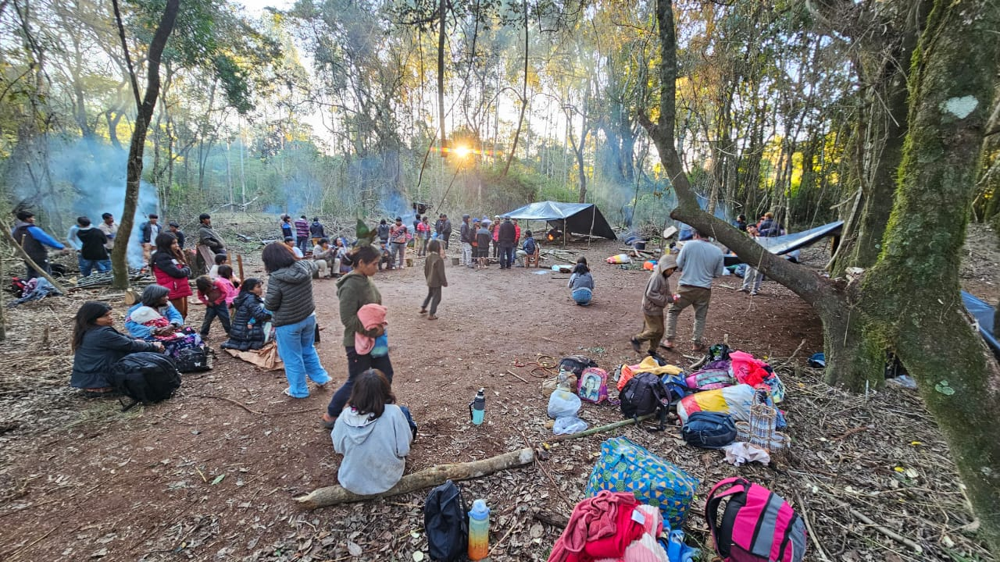
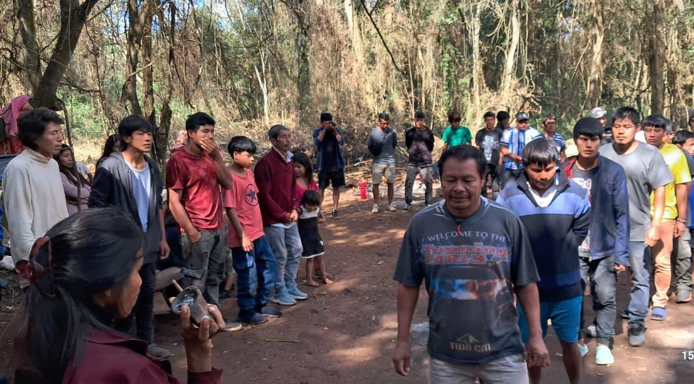
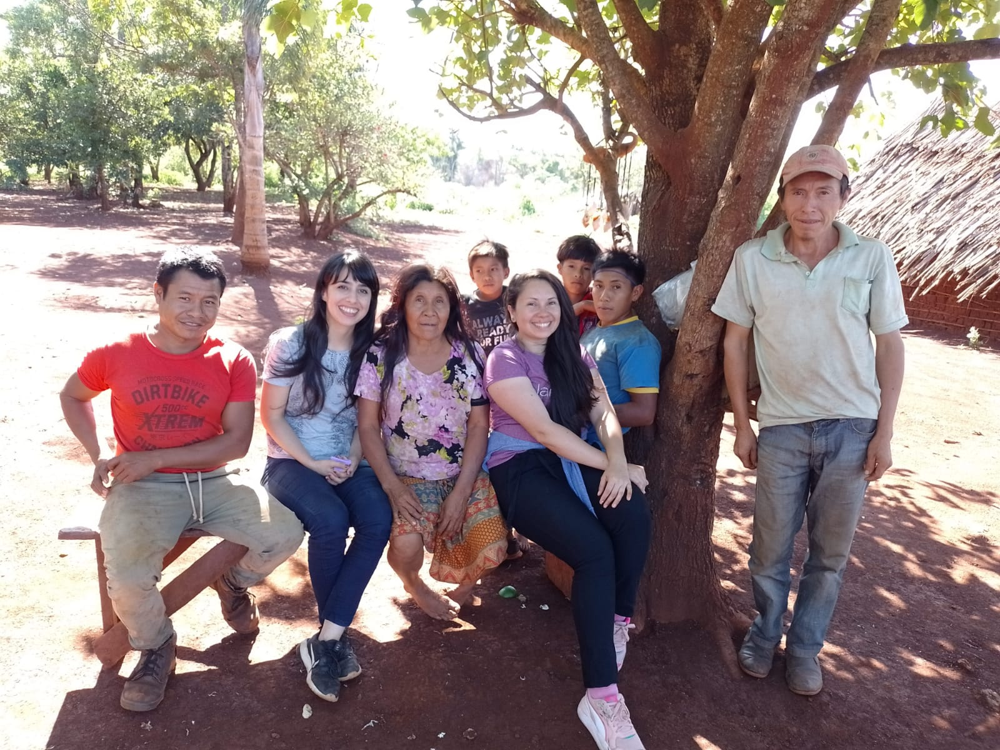
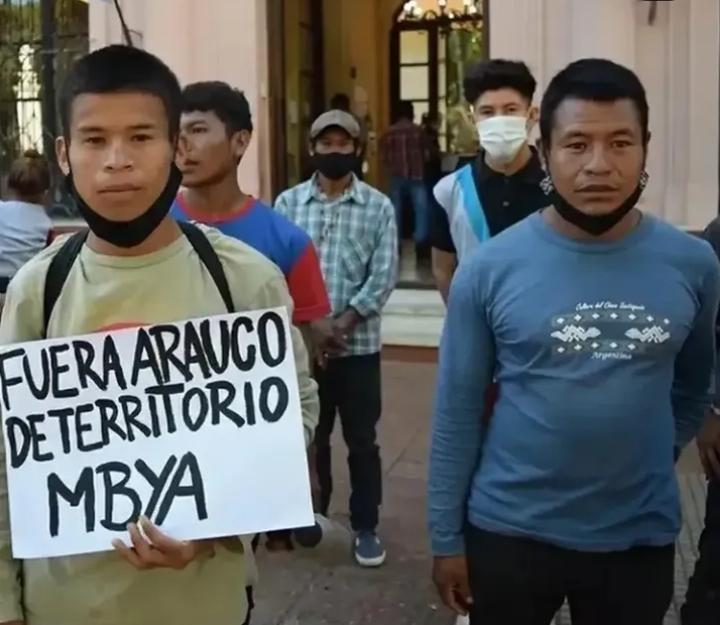
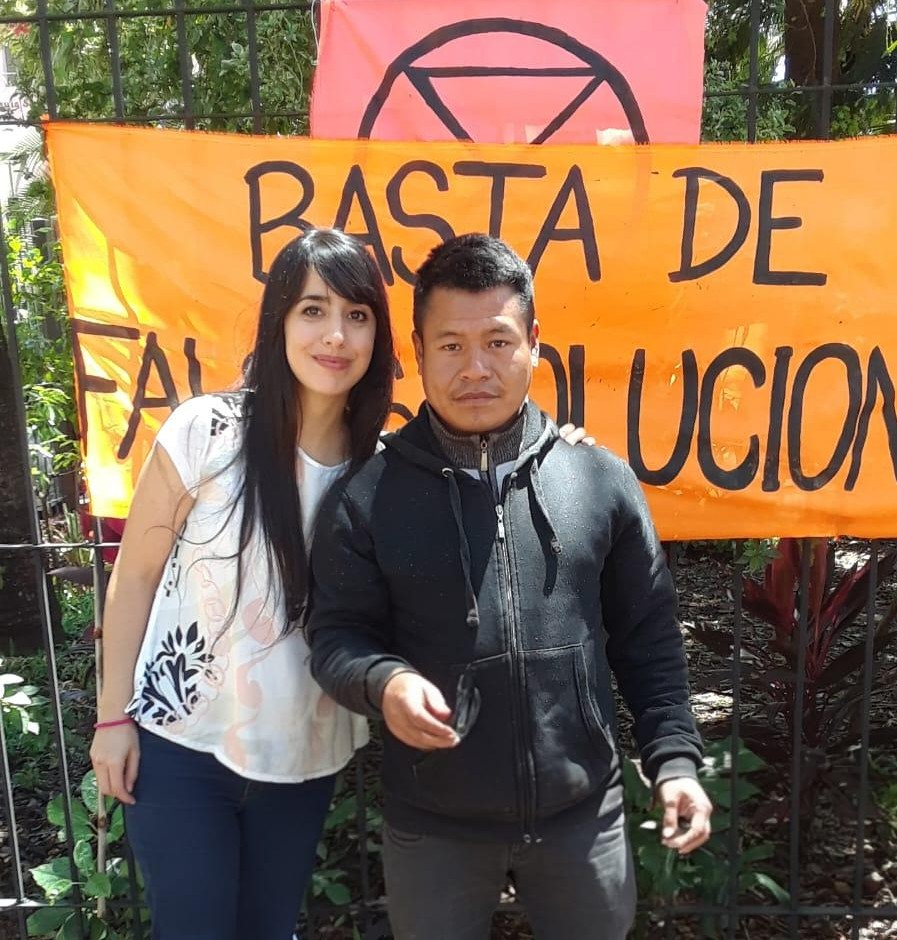
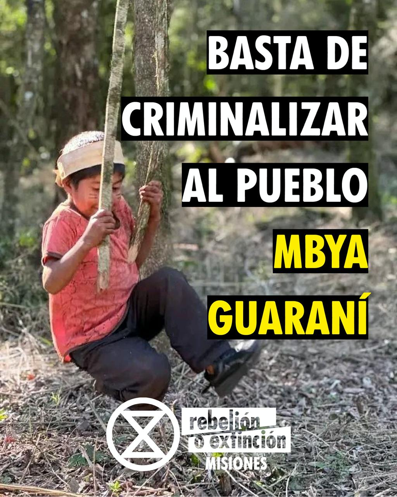

Desde la Gaceta Clara Zetkin (GCZ) nos acercamos a la trinchera viva de Puente Quemado en Misiones, para dialogar con Clarisa Neztor, activista socioambiental, estudiante de ingeniería ambiental e integrante de Extinction Rebellion Misiones, y con Santiago Ramos, mboruvixa (cacique) de la comunidad Mbya Guaraní de Puente Quemado II. La comunidad, en Garuhapé, tiene 657 hectáreas reconocidas por la Ley 26.160 de relevamiento territorial indígena. Sin embargo, enfrentan una denuncia por usurpación y un hostigamiento sistemático de fuerzas policiales y judiciales que, con detenciones arbitrarias, operan para liberar esas tierras a la explotación forestal de la transnacional chilena Arauco, cuyos monocultivos de pino ya asfixian el 80% de su territorio ancestral. Desde la GCZ nos proponemos en esta entrevista no solo abordar el conflicto por la tierra y la megapinería, sino también poner en relieve el rol de la ciencia comprometida y la producción de conocimiento situado.

Santiago: Para sentirnos respetados como Pueblo Mbya tendría que haber monte nativo. En 2021, cuando hubo un gran incendio provocado por los pinares (hablamos de más de veinticinco mil hectáreas de pinos de las cuales nosotros estamos rodeados), tomamos conciencia de que tenemos que resistir y tener fuerza para evitar que las empresas vuelvan a plantar en el mismo lugar los pinos. Es para recuperación del monte nativo, para que en diez o quince años se pueda recuperar tal como es la naturaleza. Vemos muy importante proteger nuestro territorio, que no vuelvan a entrar a seguir exterminando la biodiversidad, a contaminar el agua, el aire, todo; con glifosato, roundup, etc., contaminan los arroyos, las vertientes, los alimentos y todo lo que hay en ese lugar. Deja de ser saludable y los niños y adultos se enferman por la contaminación.
Santiago: Los políticos y los gobiernos de turno autorizan a éstas empresas a tumbar toda la naturaleza. Para nosotros es un dolor tremendo. En el monte los guías espirituales pueden escuchar a los dioses para saber, por ejemplo, cómo un niño o niña debería nombrarse. La naturaleza es parte de nuestra espiritualidad. Siempre las políticas judiciales se van del lado de las empresas, porque los Mbya no tenemos cómo defendernos, no tenemos plata. Los convenios hablan de todo esto pero dentro de la provincia de Misiones falta aplicación. No se respetan esas leyes nacionales ni los acuerdos internacionales. Para nosotros es muy difícil convivir con plantaciones de monocultivos, tanto de eucaliptos, pinos, té o yerba. Nosotros convivimos con el monte, somos parte de la naturaleza.

Santiago: Nuestro pueblo basa en el monte la formación de la cultura y para practicar medicinas tradicionales. Pero llegaron las empresas como Arauco, de la mano del sistema político quienes les entregaron las tierras. Hace aproximadamente veinticinco años, los Pueblos Mbya están sufriendo grandes atropellos contra la naturaleza; desde que llegaron, ya no queda casi nada de árboles nativos y están matando la biodiversidad. Ellos destruyen la naturaleza. Nosotros la respetamos, porque para poder tener educación tradicional tenemos que estar dentro del monte: para tener nuestra medicina tradicional, para vivir diariamente en nuestra costumbre, para la danza de cada tarde. Para nuestras ceremonias debemos tener monte para conseguir algunas frutas e incluso para el nombramiento de los niños. Debajo del pino nosotros no conseguimos nada, no conseguimos lo que necesitamos para hacer las ceremonias. Nuestros hijos tienen que aprender a hacer trampas, cazar, pescar... pero hoy esa cultura los jurua no la respetan: a veces practican la caza de subsistencia, pero los guardaparques desarman todo con la motosierra. Imponen leyes a conveniencia y nos obligan a perder esas costumbres. Estamos perdiendo nuestra cultura. La naturaleza en nuestra cultura es una guía espiritual.
Clarisa: La formación académica y la lucha territorial son caminos diferentes, pero que se retroalimentan constantemente. La universidad dentro de la carrera de ingeniería ambiental me brinda herramientas técnicas para comprender el funcionamiento de los ecosistemas, analizar impactos ambientales y evaluar las consecuencias de distintos modelos de uso del territorio. Pero es en los territorios donde ese conocimiento adquiere sentido. Acompañando a comunidades indígenas, siendo parte de asambleas socioambientales y procesos de defensa de la naturaleza aprendí que los conflictos ambientales no pueden entenderse únicamente desde variables biofísicas o económicas, sino también desde las relaciones culturales, espirituales e históricas que las comunidades construyen con sus territorios.

Una de las principales tensiones que encuentro es que gran parte de la ciencia moderna sigue apoyándose en una visión dualista que separa a la sociedad de la naturaleza. Bajo esa lógica, el monte suele ser concebido como un recurso, un stock de biodiversidad o un conjunto de servicios ecosistémicos que pueden ser cuantificados y mercantilizados. Son herramientas que resultan insuficientes para comprender la complejidad de las relaciones que existen entre los pueblos y los ecosistemas, pero que además son funcionales al extractivismo.
El monte no debería ser un objeto de estudio, sino un sujeto con el que coexistimos y del que formamos parte, aparecen tensiones epistemológicas profundas. No porque la evidencia científica contradiga esa visión, sino porque cuestiona los supuestos culturales sobre los cuales se construyó gran parte del conocimiento occidental. En muchos ámbitos académicos todavía cuesta reconocer que existen otras formas legítimas de producir conocimiento, como las que sostienen los pueblos indígenas desde hace generaciones. En Misiones, por ejemplo, el pueblo Mbya Guaraní no entiende la selva como un recurso natural separado de la vida humana. La selva es territorio, memoria, espiritualidad, alimento, medicina y comunidad. Esa mirada, lejos de ser incompatible con la ciencia, puede enriquecerla y ampliar nuestra comprensión de los sistemas socioecológicos.

Creo que uno de los grandes desafíos de las ciencias ambientales en el siglo XXI es justamente superar la idea de que la naturaleza es un objeto externo a ser administrado y capitalizado. La crisis climática y la pérdida acelerada de biodiversidad nos muestran los límites de esa visión. Necesitamos construir formas de conocimiento capaces de reconocer la interdependencia entre todos los seres vivos y de incorporar principios de justicia ecológica. Desde esa perspectiva, hablar del monte como sujeto de derechos es una propuesta ética y política que busca garantizar las condiciones necesarias para la continuidad de la vida.
Clarisa: Creo que el primer paso para construir una alianza verdaderamente horizontal entre investigadores, activistas y comunidades es reconocer que el conocimiento no se produce únicamente dentro de las universidades o los centros de investigación. Durante mucho tiempo predominó una lógica donde la academia llegaba a los territorios para extraer información, publicar artículos y luego retirarse sin que las comunidades participaran de las decisiones ni se beneficiaran de los resultados. Esa práctica, que se conoce como extractivismo académico, reproduce relaciones de poder muy similares a las que sostienen otras formas de extractivismo sobre los territorios, las cuales necesitan ser reevaluadas.

Creo que esto nos interpela sobre la necesidad urgente de un cambio de paradigma. La crisis climática y ecologica, el colapso de ecosistemas que estamos atravesando son consecuencias de una forma de entender el mundo basada en la separación entre humanidad y naturaleza, en la idea de crecimiento ilimitado y en la explotación permanente de todo aquello que se considera un recurso. Mientras sigamos reproduciendo esas lógicas, incluso dentro de espacios que buscan generar conocimiento, será muy difícil construir soluciones reales a la crisis ecológica.
Construir vínculos horizontales implica partir del reconocimiento de que existen múltiples formas de conocimiento. Las comunidades indígenas, campesinas y quienes habitan y defienden los territorios poseen saberes construidos a lo largo de generaciones que son fundamentales para comprender los ecosistemas y las problemáticas socioambientales. La ciencia no debería situarse por encima de esos conocimientos, sino dialogar con ellos en condiciones de respeto y reciprocidad.
También creo que es fundamental que la investigación responda a las necesidades reales de los territorios y no únicamente a las agendas académicas. Muchas veces las comunidades enfrentan conflictos urgentes vinculados al acceso al agua, la contaminación, los desmontes o el avance de actividades extractivas, mientras que las investigaciones se orientan hacia preguntas definidas desde otros espacios. Una alianza genuina requiere que las comunidades participen desde el inicio en la definición de los problemas, los objetivos y los usos que tendrán los resultados.

Desde mi experiencia acompañando al pueblo Mbya Guaraní en Misiones, aprendí que la confianza es uno de los valores más importantes en cualquier proceso de construcción colectiva. Las comunidades me han abierto las puertas de sus territorios, me han permitido caminar el monte junto a ellas, compartir espacios de aprendizaje y comprender parte de su forma de relacionarse con la selva. Esa confianza no surge por el simple hecho de ser estudiante o activista, sino que es el resultado de años de acompañamiento, escucha y compromiso con sus luchas y resistencias. Para mí, ese vínculo implica una enorme responsabilidad ética: la de actuar con respeto, no hablar por las comunidades sino junto a ellas, y asegurar que cualquier conocimiento construido contribuya efectivamente a la defensa de sus territorios y de la biodiversidad que protegen.
En ese sentido, considero que investigadores, activistas y comunidades debemos encontrarnos desde la humildad. La academia tiene herramientas valiosas para aportar, pero también tiene mucho que aprender. Los pueblos indígenas han sostenido durante siglos formas de convivencia con los ecosistemas que hoy resultan fundamentales frente a la crisis ecológica global. Una ciencia verdaderamente transformadora no es aquella que llega con todas las respuestas, sino aquella que es capaz de escuchar, dialogar y construir conocimiento de manera colectiva.
En un contexto de crisis climática, pérdida de biodiversidad y profundización de los conflictos socioambientales, necesitamos una ciencia más comprometida con la defensa de la vida y menos orientada a la extracción de datos. Una ciencia capaz de poner sus herramientas al servicio de los territorios y de reconocer que el conocimiento también nace de quienes habitan, cuidan y defienden los ecosistemas. Porque los desafíos que enfrentamos son demasiado complejos para ser abordados desde una única perspectiva; requieren confianza, reciprocidad y una construcción colectiva que tenga como horizonte la justicia ambiental y el cuidado de la Tierra.
Clarisa: Creo que para responder esa pregunta primero hay que preguntarse qué entendemos por convivencia. Si hablamos de monocultivos industriales de pinos o eucaliptos implantados a gran escala, orientados a maximizar la rentabilidad económica, considero que existe una contradicción estructural con la conservación de la selva y con la forma de vida del pueblo Mbya Guaraní.

Los monocultivos simplifican ecosistemas complejos y diversos para reemplazarlos por una única especie. Generan fragmentación del hábitat, alteraciones en los ciclos hidrológicos, degradación de los suelos, pérdida de biodiversidad y una profunda transformación de las dinámicas ecológicas del territorio. Pero además producen una ruptura cultural, porque para el pueblo Mbya la selva no es únicamente un espacio físico, sino que es el lugar donde se encuentran los alimentos, las plantas medicinales, los sitios sagrados, los conocimientos ancestrales y las relaciones que sostienen su identidad como pueblo.
Desde esa perspectiva, resulta difícil imaginar una convivencia armónica entre un modelo basado en la homogeneización del territorio y otro basado en la diversidad biológica y cultural. Son lógicas muy diferentes. Una concibe al territorio principalmente como una mercancía y una fuente de materias primas; la otra lo entiende como una red viva de relaciones de la cual las personas forman parte.
Si el Estado cumpliera efectivamente la Constitución Nacional, el Convenio 169 de la OIT y los derechos reconocidos a los pueblos indígenas, el punto de partida debería ser garantizar la restitución, protección y autonomía sobre sus territorios. Eso implicaría reconocer que son las propias comunidades quienes deben decidir qué modelo de desarrollo desean para sus espacios de vida.
No quiero un futuro para Misiones basado en el extractivismo forestal. Durante décadas se nos ha presentado a los monocultivos de pinos como sinónimo de desarrollo, pero sus consecuencias son visibles en todo el territorio: pérdida de selva nativa, disminución de la biodiversidad, acaparamiento de tierras, conflictos con comunidades indígenas y campesinas, degradación de suelos, alteración de los ciclos del agua y un aumento significativo del riesgo de incendios forestales.

Desde mi perspectiva, los monocultivos de pinos representan una forma de ocupación del territorio que avanza sobre la selva y reemplaza ecosistemas complejos por verdaderos desiertos verdes. Donde antes existían cientos de especies de árboles, plantas, aves, mamíferos, insectos y hongos, hoy encontramos extensiones homogéneas destinadas a abastecer una industria extractiva. Por eso muchas comunidades indígenas y organizaciones socioambientales los percibimos como una amenaza para la continuidad de la vida en la selva misionera.
Creo que el verdadero desafío para Misiones no es encontrar una manera de hacer compatible la selva con el extractivismo forestal, sino poner fin a un modelo que durante décadas ha convertido los territorios en zonas de sacrificio al servicio de intereses corporativos. La crisis climática, la pérdida de biodiversidad y el avance sobre los territorios indígenas nos muestran que no podemos seguir profundizando un sistema basado en la explotación ilimitada de la naturaleza. Necesitamos un cambio de paradigma que reconozca que la selva no es una mercancía ni una fuente de recursos, sino una trama de vida de la que dependemos. La selva misionera no necesita más monocultivos; necesita más monte nativo, más biodiversidad, más agua, más comunidades viviendo en armonía con sus territorios y menos empresas decidiendo el futuro de nuestros ecosistemas.
Clarisa y Santiago: Hoy la principal estrategia de resistencia de la comunidad Mbya Guaraní de Puente Quemado II es permanecer en su territorio y seguir reconstruyendo el vínculo con la selva a pesar de todas las presiones que enfrentan. La resistencia no se expresa únicamente en las denuncias o en los momentos de conflicto visible, sino también en acciones cotidianas que llevan adelante diariamente, como cuidar el monte que aún queda en pie, recuperar espacios degradados por los monocultivos, fortalecer la transmisión de conocimientos ancestrales a las nuevas generaciones, cultivar alimentos, proteger las fuentes de agua y sostener la vida comunitaria en un contexto de permanente amenaza.
El verano de 2022, la comunidad tuvo que enfrentar un incendio originado en los pinares que Arauco tiene dentro del territorio Mbya, el cual puso en riesgo tanto a las familias como al territorio . La multinacional cuenta con mas de 230 mil hecatareas apropiadas en la provincia, de las cuales 333 se prendieron fuego dentro de Puente Quemado II en 2022, la comunidad tiene 657 hectareas que les corresponden por relevamiento territorial, pero al vivir acorralados por los pinares tienen poco espacio para hace su uso tradicional y cultivar alimentos, ya que por otra zona de su territorio los empresarios forestales como Alfredo Ruff avanzan con desmontes, de modo que cercan a pocas hecatareas a la comunidad. Lejos de abandonar la lucha, se organizaron colectivamente para apagar el fuego, proteger el monte y continuar defendiendo el lugar que habitan. Esa capacidad de resiliencia es inmensa y demuestra que la defensa territorial es una práctica cotidiana de cuidado de la vida. Sin embargo, ninguna comunidad debería enfrentar sola estas situaciones. Durante años los pueblos indígenas han sido quienes mejor han conservado los ecosistemas que hoy resultan fundamentales para enfrentar la crisis climática y ecológica. Existe una responsabilidad colectiva de acompañar esas resistencias, porque lo que está en juego no es únicamente el futuro de una comunidad, sino también el de los ecosistemas que sostienen la vida de todos.

Quienes están lejos del conflicto pueden ayudar de muchas maneras. Difundiendo la situación de la comunidad para romper el silencio y la invisibilización, acompañando campañas de solidaridad, colaborando con las necesidades materiales que la comunidad identifica como prioritarias, apoyando las acciones de organizaciones que trabajan junto al pueblo Mbya y exigiendo a las autoridades provinciales y nacionales que respeten los derechos indígenas reconocidos por la Constitución Nacional, el Convenio 169 de la OIT y la Ley 26.160.
Pero acompañar es también comprender que la lucha de Puente Quemado II es uno de los conflictos territoriales más latentes e importantes en la provincia y parte de una disputa mucho más amplia sobre qué futuro queremos construir. Allí se enfrentan dos modelos de territorio: uno basado en la expansión de monocultivos, el extractivismo y la mercantilización de la naturaleza; y otro basado en el cuidado de la selva, la biodiversidad y la defensa de la vida.

Por eso, cuando una comunidad Mbya defiende su territorio, no defiende solamente unas hectáreas de tierra. Está defendiendo conocimientos ancestrales, fuentes de agua, biodiversidad, memoria y formas de relacionarnos con la naturaleza que resultan indispensables en un mundo atravesado por el colapso ecológica. la mejor manera de ayudar es no permanecer indiferentes, en este momento se puede participar de la Campaña Plurinacional Todxs Somos Puente Quemado II, donde pueden enviar su foto con alguna frase en apoyo a la comunidad como ser: Devuelvan el territorio a Puente Quemado II y Basta de criminalizar al Pueblo Mbya. Asi el gobierno de Misiones pueden ver que somos miles defendiendo y acompañando la lucha territorial indigena y que no somos ajenos a la violencia insitucional que ejercen a las comunidades para beneficio del extractivismo forestal.